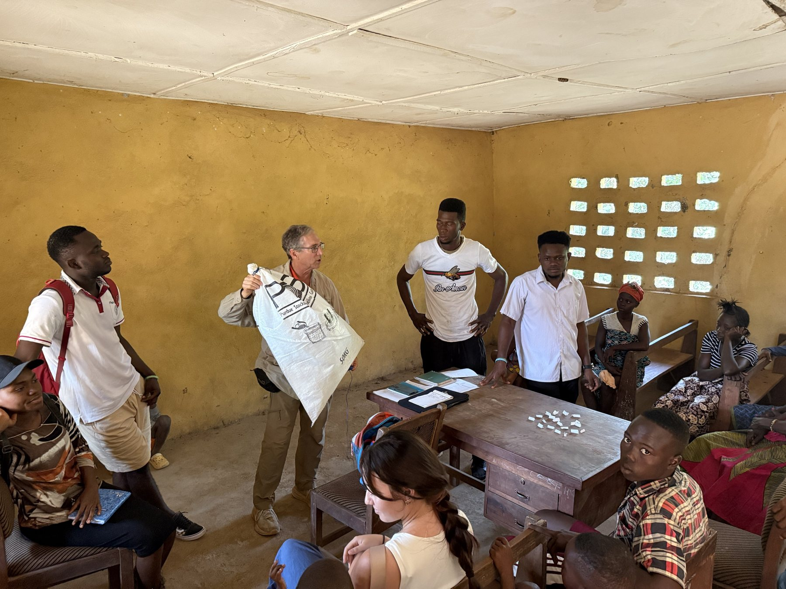
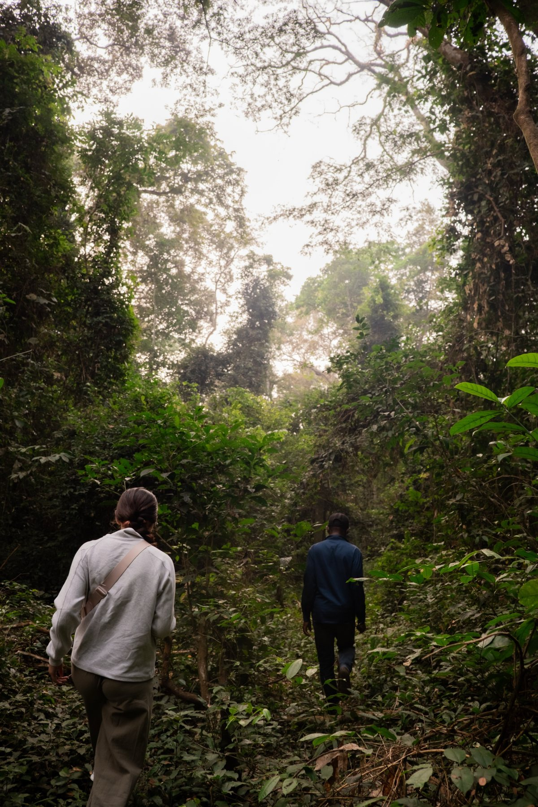
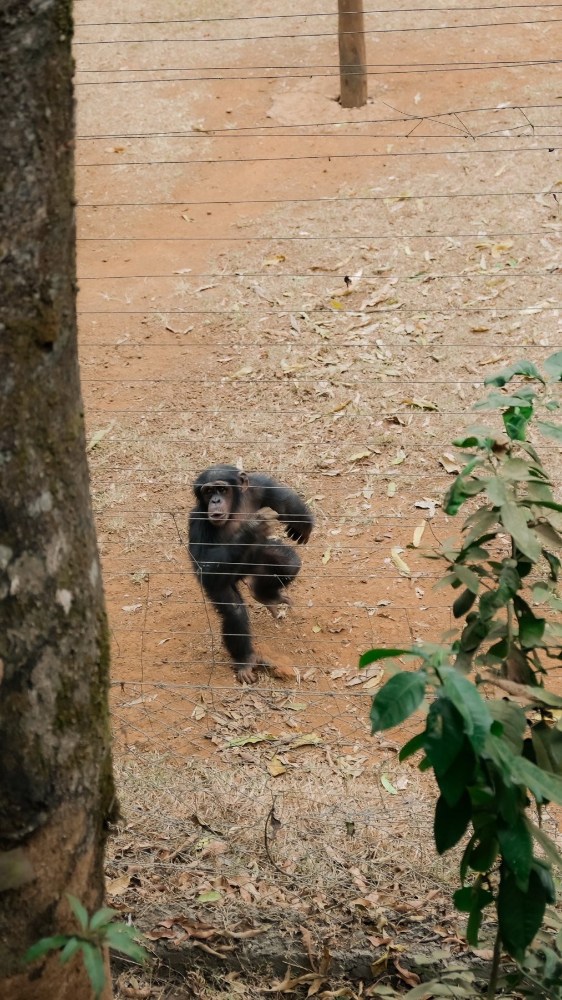
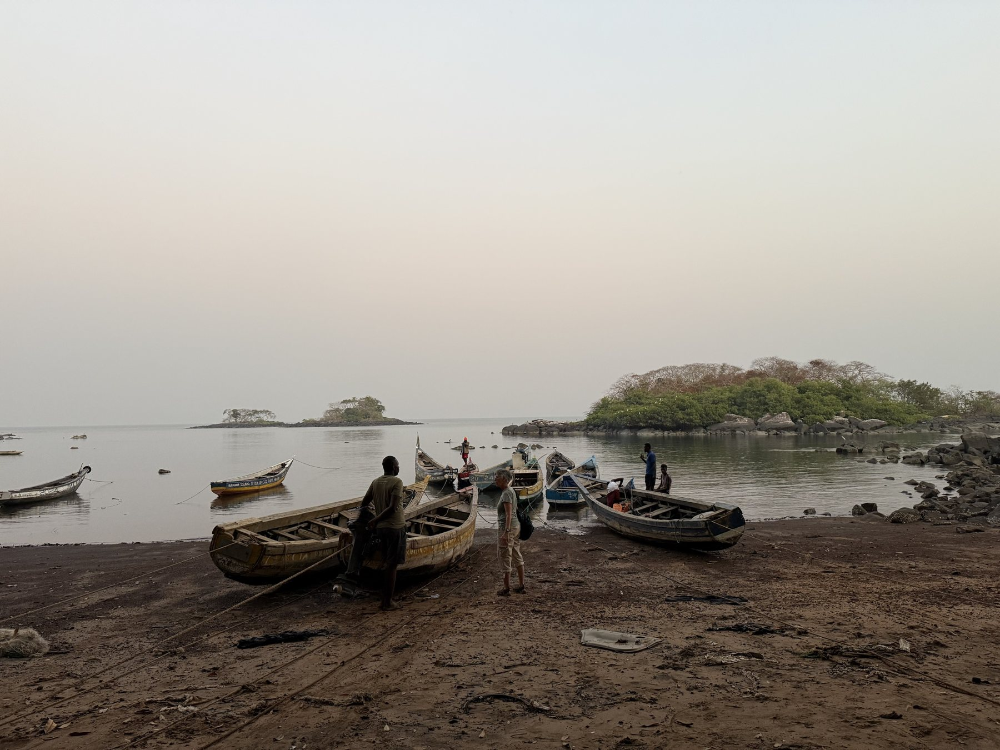
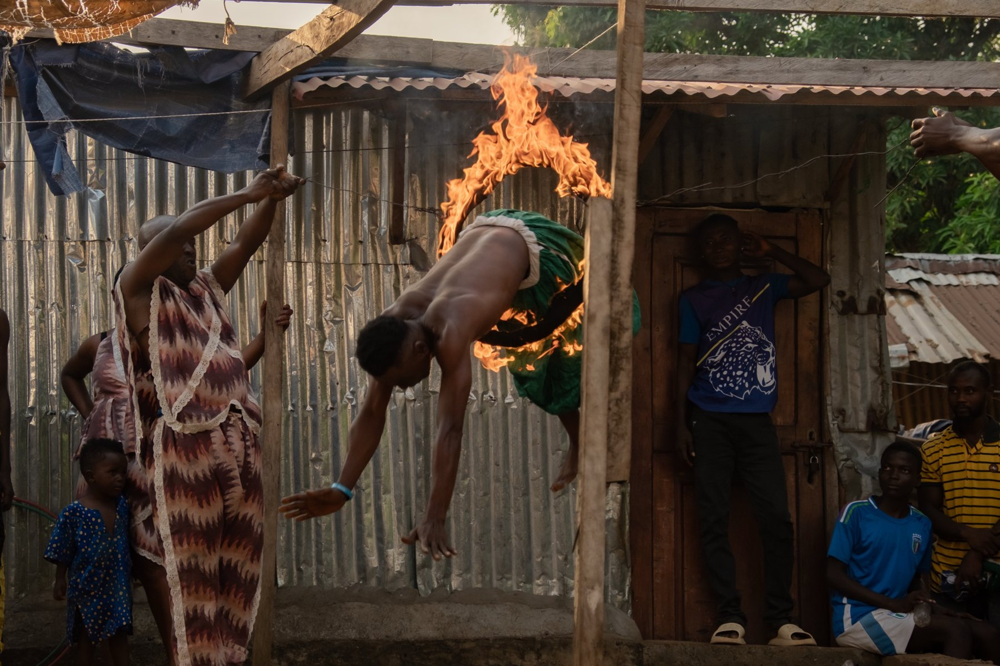
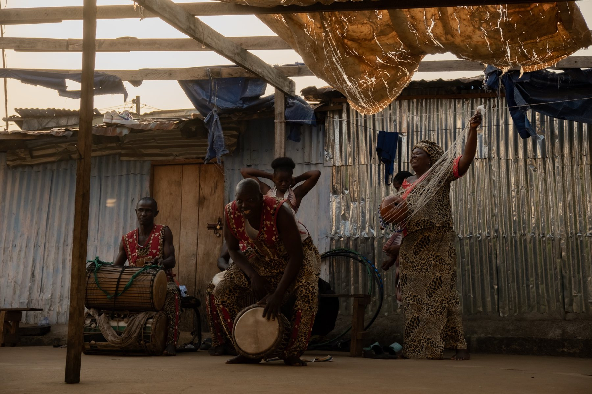

Over winter break, I traveled to Sierra Leone, on the coast of West Africa, for a study abroad service project on post-harvest loss prevention.
- Program
- Study abroad service project
- Focus
- Post-harvest loss prevention
- Reach
- 19 villages · 606 people
- Region
- Moyamba District
The Project
In many rural villages, subsistence farmers grow just enough to feed their families, so food lost to poor storage can mean months of hardship. Our team showed educational videos in Krio that demonstrate low-tech storage techniques, like repurposing plastic containers into airtight storage that kills weevils. We worked alongside students from Njala University, who speak the local languages, Krio and Mende, so the project was effective and culturally relevant.
The video-extension project reached 19 villages in the Moyamba District and 606 men, women and youth.
What I Took Away
The program wasn't directly tied to my major, but it showed me how far engineering reaches beyond traditional fields. The most powerful solutions were simple, low-cost and built around real needs, a reminder that the true impact of engineering lies in the people it serves.





